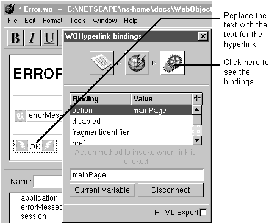

Table of Contents
Table of Contents
 Previous Section
Previous Section
Table of Contents
Previous Section
Drag a WOHyperlink from the Abstract Elements palette to the component window.
Replace the word Hyperlink with the text of the link.
Bind the hyperlink to a variable or a method.

WebObjects Builder allows you to create either static hyperlinks or dynamic hyperlinks (which are WOHyperlink dynamic elements). Use WOHyperlink instead of a static hyperlink when:
In this case, you can bind to WOHyperlink's pageName attribute. Specify the component's name in the bindings inspector's text field. See "Binding Elements Using the Inspector."
In this case, you can bind to WOHyperlink's action attribute. Specify a method that determines which page should be returned when the link is clicked.
The inspector shows a complete list of the WOHyperlink attributes you might bind to, and the WOHyperlink description in the WebObjects Reference contains complete descriptions of them.
To learn how to create a static hyperlink, see "Creating Hyperlinks."
 Next Section
Next Section